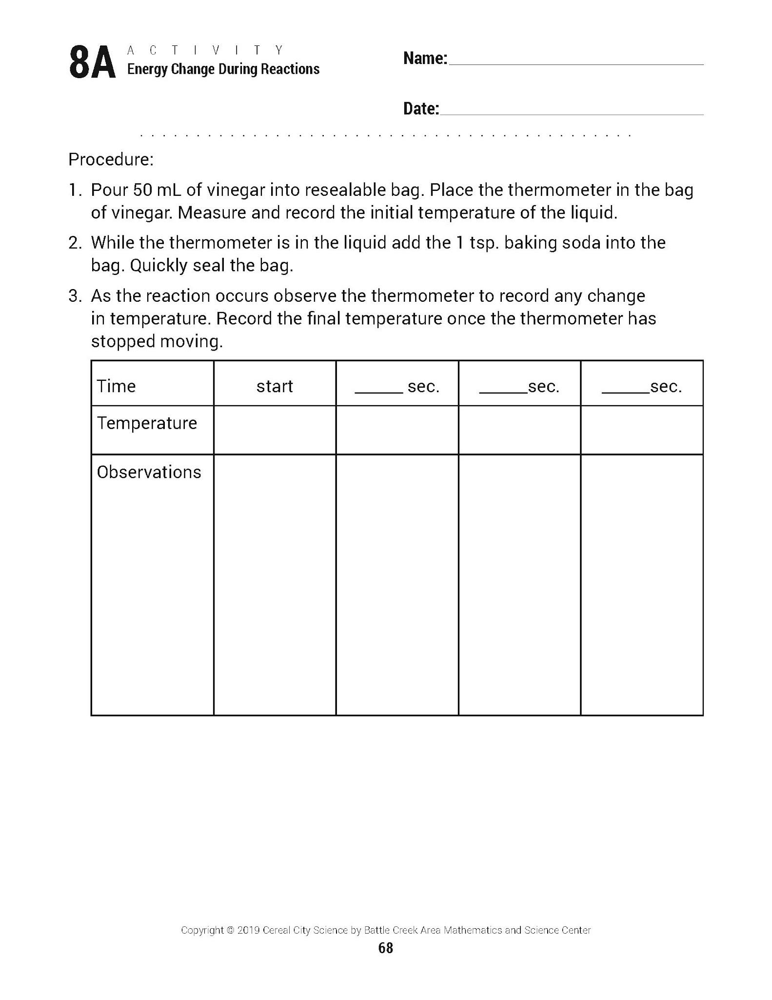
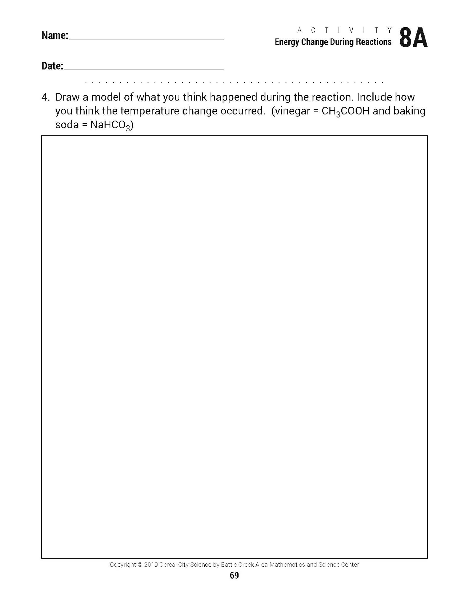
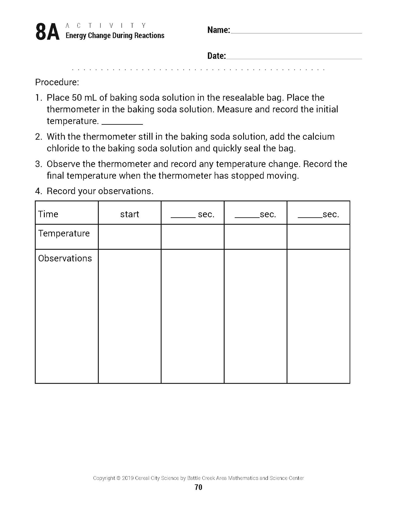
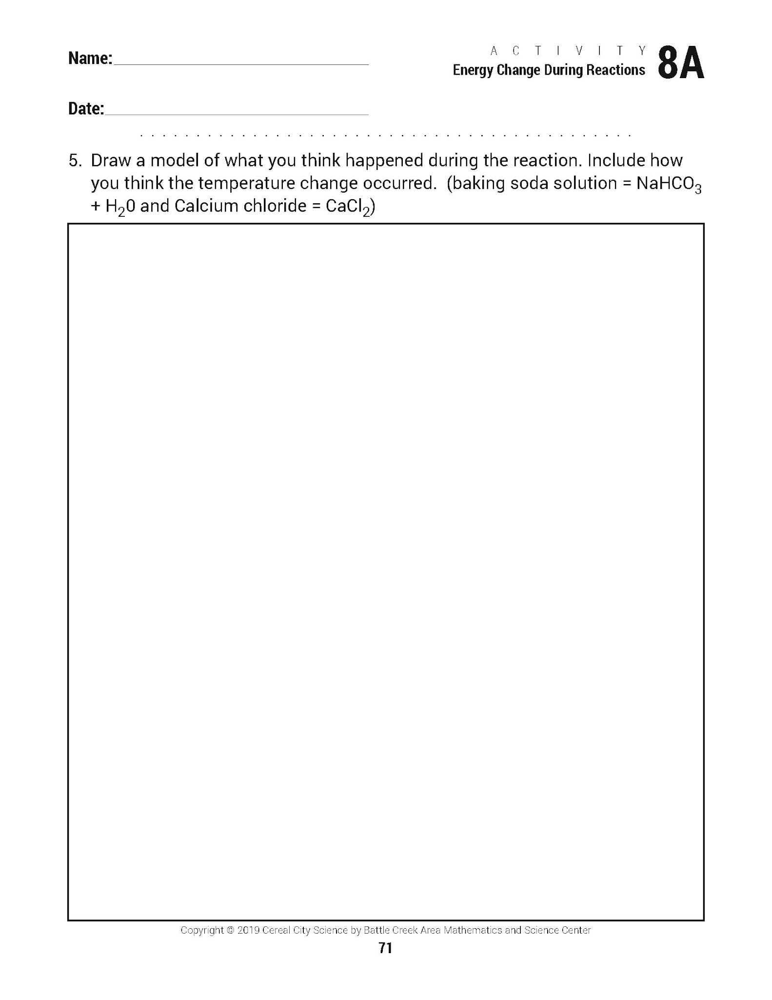
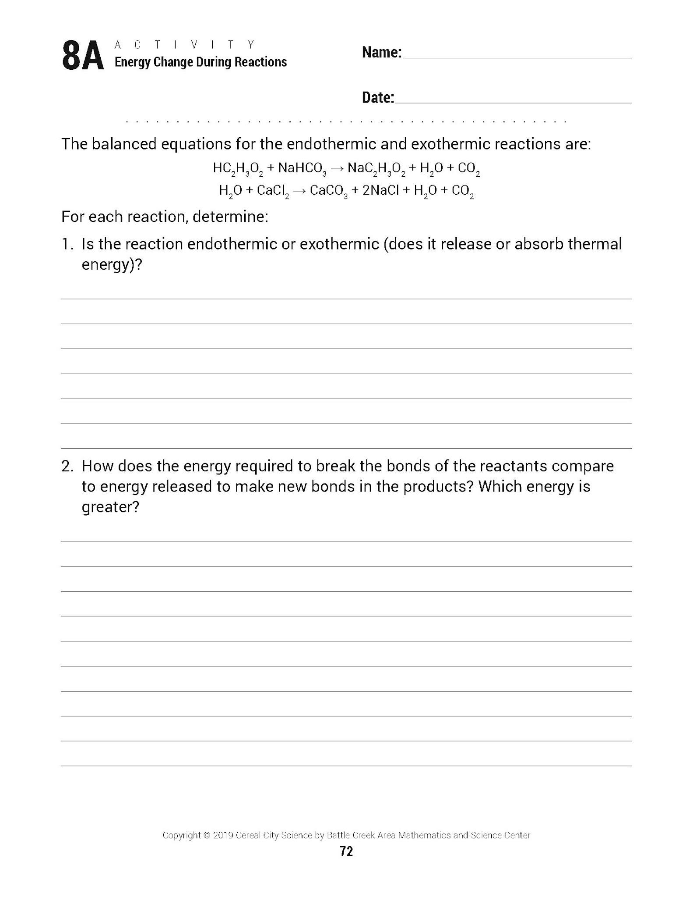
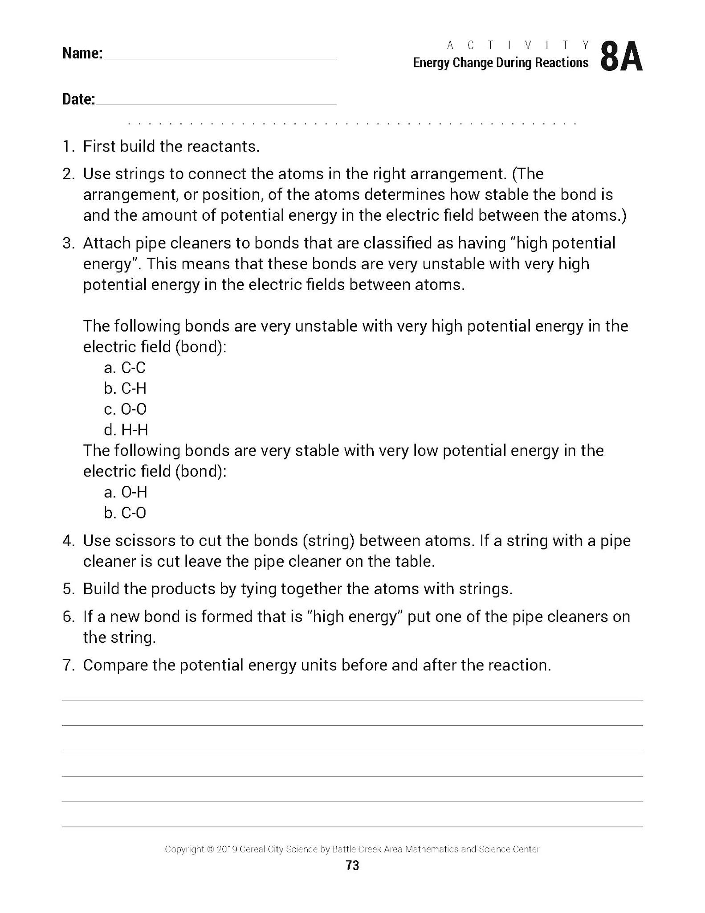
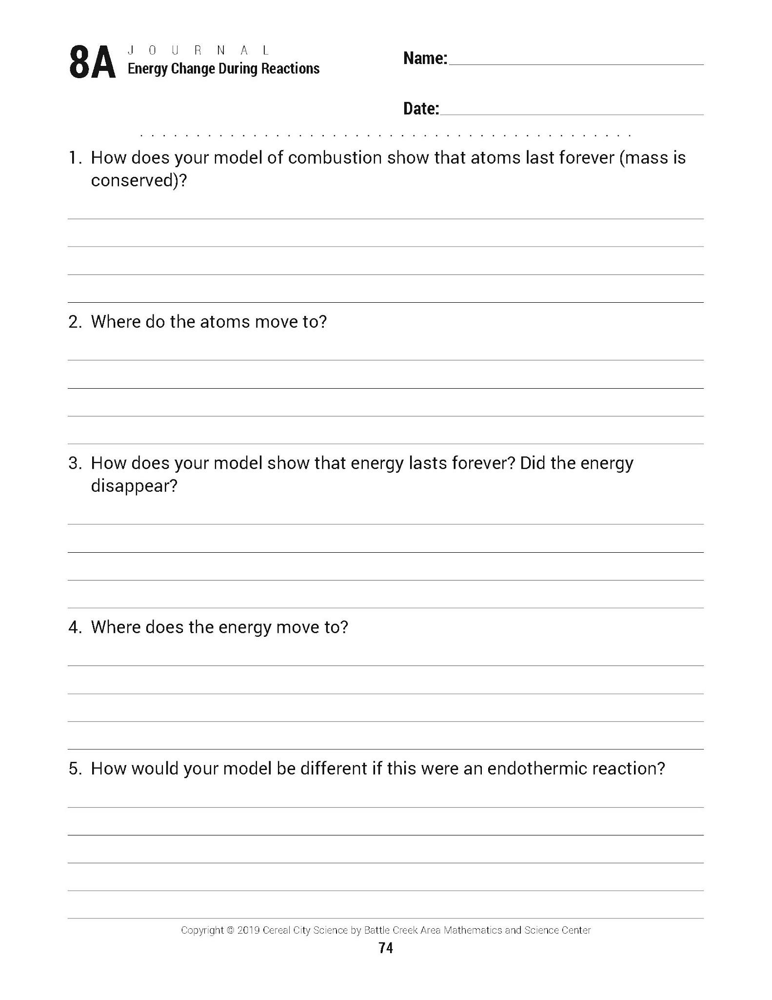

Activity 8A • Energy Change During ReactionsJournal page 68 of 84
Name: ______________________________Date: _______________
Procedure
1. Pour 50 mL of vinegar into resealable bag. Place the thermometer in the bag of vinegar. Measure and record the initial temperature of the liquid.
2. While the thermometer is in the liquid add the 1 tsp. baking soda into the bag. Quickly seal the bag.
3. As the reaction occurs observe the thermometer to record any change in temperature. Record the final temperature once the thermometer has stopped moving.
| Start | ____ sec. | ____ sec. | ____ sec. | End |
|---|
| Temperature | | | | | |
| Observations | | | | | |
Compare with original journal page 68
This is the unmarked scanned page for checking original diagrams, exact wording, or layout. The editable HTML content is above.

Activity 8A • Energy Change During ReactionsJournal page 69 of 84
Name: ______________________________Date: _______________
4. Draw a model of what you think happened during the reaction. Include how you think the temperature change occurred. (vinegar = CH₃COOH and baking soda = NaHCO₃)
Compare with original journal page 69
This is the unmarked scanned page for checking original diagrams, exact wording, or layout. The editable HTML content is above.

Activity 8A • Energy Change During ReactionsJournal page 70 of 84
Name: ______________________________Date: _______________
Procedure
1. Place 50 mL of baking soda solution in the resealable bag. Place the thermometer in the baking soda solution. Measure and record the initial temperature.
2. With the thermometer still in the baking soda solution, add the calcium chloride to the baking soda solution and quickly seal the bag.
3. Observe the thermometer and record any temperature change. Record the final temperature when the thermometer has stopped moving.
4. Record your observations.
| Start | ____ sec. | ____ sec. | ____ sec. | End |
|---|
| Temperature | | | | | |
| Observations | | | | | |
Compare with original journal page 70
This is the unmarked scanned page for checking original diagrams, exact wording, or layout. The editable HTML content is above.

Activity 8A • Energy Change During ReactionsJournal page 71 of 84
Name: ______________________________Date: _______________
5. Draw a model of what you think happened during the reaction. Include how you think the temperature change occurred. (baking soda solution = NaHCO, + H,0 and Calcium chloride = CaCl)
Compare with original journal page 71
This is the unmarked scanned page for checking original diagrams, exact wording, or layout. The editable HTML content is above.

Activity 8A • Energy Change During ReactionsJournal page 72 of 84
Name: ______________________________Date: _______________
The balanced equations for the endothermic and exothermic reactions are:
HC₂H₃O₂ + NaHCO₃ → NaC₂H₃O₂ + H₂O + CO₂
H₂O + CaCl₂ → CaCO₃ + 2NaCl + H₂O + CO₂
For each reaction, determine:
1. Is the reaction endothermic or exothermic (does it release or absorb thermal energy)?
2. How does the energy required to break the bonds of the reactants compare to energy released to make new bonds in the products? Which energy is greater?
Compare with original journal page 72
This is the unmarked scanned page for checking original diagrams, exact wording, or layout. The editable HTML content is above.

Activity 8A • Energy Change During ReactionsJournal page 73 of 84
Name: ______________________________Date: _______________
1. First build the reactants.
2. Use strings to connect the atoms in the right arrangement. (The arrangement, or position, of the atoms determines how stable the bond is and the amount of potential energy in the electric field between the atoms.)
3. Attach pipe cleaners to bonds that are classified as having “high potential energy”. This means that these bonds are very unstable with very high potential energy in the electric fields between atoms.
The following bonds are very unstable with very high potential energy in the electric field (bond):
a. C-C b. C-H c. O-O d. H-H
The following bonds are very stable with very low potential energy in the electric field (bond):
a. O-H b. C-O
4. Use scissors to cut the bonds (string) between atoms. If a string with a pipe cleaner is cut leave the pipe cleaner on the table.
5. Build the products by tying together the atoms with strings.
6. If a new bond is formed that is “high energy” put one of the pipe cleaners on the string.
7. Compare the potential energy units before and after the reaction.
Compare with original journal page 73
This is the unmarked scanned page for checking original diagrams, exact wording, or layout. The editable HTML content is above.

Activity 8A • Energy Change During ReactionsJournal page 74 of 84
Name: ______________________________Date: _______________
1. How does your model of combustion show that atoms last forever (mass is conserved)?
2. Where do the atoms move to?
3. How does your model show that energy lasts forever? Did the energy disappear?
4. Where does the energy move to?
5. How would your model be different if this were an endothermic reaction?
Compare with original journal page 74
This is the unmarked scanned page for checking original diagrams, exact wording, or layout. The editable HTML content is above.
